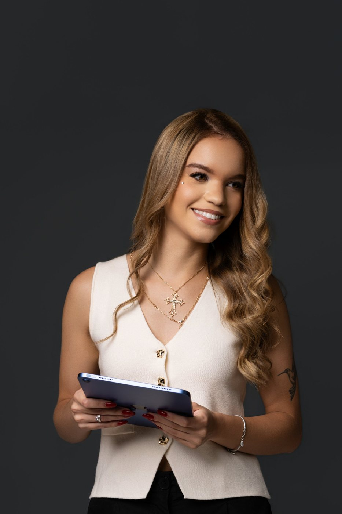
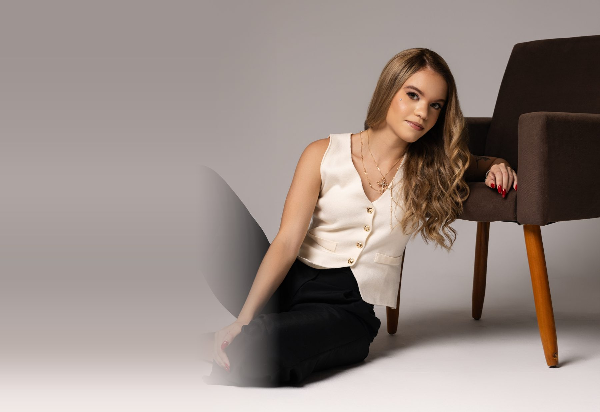

Sou formada em Publicidade e Propaganda e trabalho com redes sociais desde 2020. Comecei pelo design e, com a experiência, entendi que a comunicação de uma marca precisa de muito mais do que posts bonitos.
Hoje, uno estratégia, copy e design para construir uma presença digital coerente, que comunique os diferenciais do negócio e mostre o valor do que ele oferece.
Análise do perfil, definição de objetivos e planejamento dos conteúdos.
Briefing, alinhamento de pautas e acompanhamento das necessidades da marca.
Definição de pautas e criação de copies alinhadas à estratégia e ao público.
Desenvolvimento dos posts e padronização visual das publicações.
Acompanhamento dos indicadores e identificação de oportunidades de melhoria.

Tenha uma gestão de conteúdo pensada para o seu negócio, com estratégia, planejamento e uma comunicação alinhada aos seus objetivos.
Quero conversar pelo WhatsApp